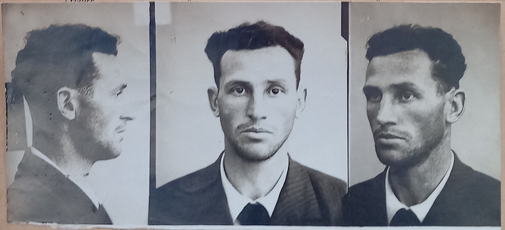

1Vincenzo Marcon (znan kot “Davilla”) je bil komunistični borec, rojen v Trstu, ki je med letoma 1942 in 1943 vodil julijsko “zvezo” Komunistične partije Italije (PCd’I – Partito Comunista d’Italia). Tega leta ga je odstavilo novo vodstvo te organizacije (zbrano okoli Luigija Frausina), ki je Marconovo linijo (osredotočeno na tesno sodelovanje s slovenskim partizanskim gibanjem) nadomestilo z drugo, osnovano na enotnosti italijanskih antifašističnih strank in gibanj, ki so sledila politiki narodnoosvobodilnega odbora. Na podlagi analize dokumentacije italijanske politične policije ter italijanskega in slovenskega komunističnega gibanja članek prvič znanstveno analizira Marconovo vlogo v komunističnih vrstah med “partizansko vojno” v zgornjem Jadranskem primorju.
2Ključne besede: Vincenzo Marcon “Davilla”; italijanski odpor; Komunistična partija Italije; Komunistična partija Slovenije; osvobodilna Fronta; Julijska krajina.
1Vincenzo Marcon (known as “Davilla”) was a communist militant, born in Trieste, who led the PCd’I (Partito Comunista d’Italia) Julian “federation” between 1942 and 1943. That year, he was dismissed by the new direction of that organisation, gathered around Luigi Frausin, who replaced Marcon’s line (focused on a strong collaboration with the Slovenian partisan movement) with another one based on the unity of the Italian antifascist parties and movements following the politics of the Committees of National Liberation. Thanks to the analysis of the documentation produced by the Italian political police and the Italian and Slovenian communist movements, this article provides the first scientific analysis of Marcon’s role in the communist ranks in the Upper-Adriatic Littoral during the “partisan war”.
2Keywords: Vincenzo Marcon “Davilla”; Italian Resistance; Communist Party of Italy; Communist Party of SLovenia; Liberation Front; Julian March
1“Una trattazione approfondita merita la figura di Vincenzo Marcon, che ha guidato, in nome del PCd’I [Partito Comunista d’Italia], la maggior parte delle organizzazioni dei comunisti aderenti al PCd’I nella zona,” the Julian March (“The figure of Vincenzo Marcon deserves a detailed analysis. On behalf of the Communist Party of Italy, he led most of the communist organisations associated with the PCd’I in the area”). These are Rodolfo Ursini Uršič’s words, written in his autobiographical book, in which he also defines Marcon as a somewhat neglected and not appropriately explored figure.1
2In fact, Marcon (better known under his pseudonym Davilla/Davila) is one of the several antifascist militants (especially communists) who have barely received any historiographical attention. In Marcon’s case, this was due to his disgraceful end: after having led the PCd’I “federation”2 in the Julian March between 1942 and 1943, he was dismissed by the new Italian communist leadership in that area, gathered around Luigi Frausin, which formed in August 1943. Later, he was accused of being a spy due to the discovery of evidence (not found by historians and therefore not verifiable) of his double-dealing for the Italian political police as well as the German authorities of the OZAK ( Operationszone Adriatisches Küstenland), the Operational Zone of the Adriatic Littoral established by the German Reich in September 1943. For this reason, he was summarily tried and then executed by the garibaldini (communist partisans). This was also the ultimate fate of a few other communists who had fought in the Italian Resistance: I am referring to Libero (Riccardo Fedel) and Facio (Dante Castellucci), both shot (like Marcon) by the “Garibaldi” Brigades. While Fedel was executed by a firing squad in Romagna in June 1944 because he had been found guilty of embezzlement and insubordination, Castellucci was shot in Lunigiana (northern Tuscany) the following month after being accused of stealing.3
3While their cases had been examined in detail by historiography,4 the same was not true of Marcon. Even today, he is still unknown outside the community of scholars of the Resistance in the Upper Adriatic, who have only recently indirectly examined his political role.5 For now, the only specific work about him is an unpublished typewritten text6 written by Marcon’s nephew to restore the man’s honour. Its author, Oskar Ferluga, is credited with first attempting to reconstruct Marcon’s biography by examining a small yet scientifically interesting corpus of sources. However, I believe that the author’s evident goal and sentimental attitude towards the subject of his research taint the scientific quality of his work, in which he states Marcon’s innocence due to the lack of evidence of his guilt. Instead, in this article, I specifically focus on Marcon’s role in the partisan war, which took place in the Upper-Adriatic Littoral,7 with the “simple” aim of producing scientific research that is as detailed as possible, based especially on the reports and notices produced by the Italian Ministry of Interior’s General Directorate for Public Security ( Direzione Generale di Pubblica Sicurezza, hereafter PS), the reports and memorial notes coming from the Italian communist circles of the Julian March, as well as the documentation of the Communist Party of Slovenia (KPS) and the Liberation Front (OF), published in two volumes and edited by the Institute for the History of the Workers’ Movement, and the Archives of the Republic of Slovenia.8
4Due to the lack of any documentation concerning Marcon and the absence of biographic texts, it is impossible to reconstruct his profile in detail. Moreover, in my opinion, his controversial demise and the opacity of his figure have deterred scholars from conducting any specific research on the subject until the 1990s. This partly happened to avoid casting a bad light on figures such as Frausin, Vincenzo A. Gigante, and Mario Karis due to their role in the Resistance and (in Karis’ case) after World War II. In fact, Frausin and Gigante followed a political line (the Ciellenist one) that proved to be successful, both in the Julian March and all over Italy, while Karis was among those who contributed to the preparation of the trial for the crimes committed at the Risiera di San Sabba between 16 February and 28 April 1976. Last but not least, the equally dramatic death of Frausin and Gigante (both killed at the Risiera) 9 contributed to creating an aura of martyrs around them as victims of Nazi-fascism. The sentiment took hold in the Julian antifascist community, which, in my opinion, acted as a deterrent from researching Marcon to avoid tarnishing his image.
1Marcon was born in Trieste on 18 January 1907 in Via Commerciale, in the district of Roiano, in a humble Italian-Slovenian family (his mother, Francesca Potocnik, had Slovenian origins). After attending the “Industriali” high school, he was sent to Genoa and Savona to serve in the navy. In February 1929, he returned to Trieste and started working as a mechanic at the shop run by Luigi Schromek in Via Udine. According to Ferluga, in these years, Marcon joined the communists of Monfalcone and Trieste,10 whose ethnic structure changed after its annexation to the Kingdom of Italy as it lost much of the non-Italian population: the number of its German and Slovenian residents dropped to 20 % of the total population.11 This change resulted from Trieste’s transformation from the leading Central European port city in the Adriatic into an Italian provincial city and had dramatic economic consequences. The context contributed to the development of dissatisfaction and discontent in the local population and indirectly to the rise of Marxism and thus the Italian Socialist Party led by the maximalists (both nationally and in Trieste, in this case from April 1919). Many Slavs joined, attracted and reassured by the Party’s internationalist spirit and the consequent anti-nationalism.12
2It is unclear when and thanks to whom Marcon joined the PCd’I, founded in Livorno on 21 January 1921. Soon, the Party also became one of the main antifascist forces in the Julian March, where it received 20,473 (or 14.1 %) and 20,765 votes (7.7 %), respectively, at the 1921 and 1924 general elections. The results made the Julian March the fifth largest region in Italy in terms of the number of votes cast for the communists.13 It is very likely that in the dynamic communist milieu of Julian March, Marcon had the idea of clandestinely emigrating to Yugoslavia in December 1929, officially in search of work, by crossing the Italian-Yugoslav border near Tarvisio on foot.14
3Between 1929 and 1935, Marcon lived as an emigrant between France, Yugoslavia, Austria, and Eritrea. Because of the absence of any documentation regarding his movements (except what was produced by the Italian PS),15 the details of his movements and the reasons for his emigration remain unknown. However, he was likely a courier of the PCd’I, which had been declared illegal (the same as all antifascist parties and movements) due to the Fascist Exceptional Law, implemented in November 1926. Consequently, the Party had reconstituted itself clandestinely with a dual leadership (known as the Foreign Centre and the Inner Centre) and a precarious but tenacious network of clandestine groups in Italy, especially in the central-northern areas.16
4On 16 December 1935, Marcon returned to Trieste, where, in November of the following year, he first worked at a telephone equipment warehouse and then for the Construction Circle associated with the Royal Italian Post Office. He ceased working there due to his arrest on 2 April 1937.17 It seems that the incident resulted from treachery by a police informant, who was aware of Marcon’s antifascist activities and suspected that he was trying “di procurarsi benemerenze nell’ambiente sovversivo, in vista di un suo trasferimento in Francia” (“to procure merit in the subversive circles, given his transfer to France”).18 It is conceivable that the political police had been watching Marcon since his return to Trieste and had intensified their investigation of him after his repeated attempts to emigrate. Furthermore, a letter written by Marcon and intercepted by the police officers contributed to the latter’s suspicions of him, as it was addressed to Albino Biziak, a communist militant born in Trieste and described by Italian authorities as a “dangerous exile” living at “Rue Carnot Maison Alfort – Seine France”.19 According to the investigators, the letter represented one of the elements attesting to Marcon’s connections with militant antifascism. Consequently, he was first imprisoned in Trieste’s Coroneo prison before his “confinement odyssey” between Apulia, Lazio, and Calabria, which lasted until 1 April 1942.20
5When his confinement ended, Marcon returned to Trieste and attempted to resume contact with the embryonic groups of the PCd’I operating in the Julian March. This occurred in the broader scenario of the relations between the PCd’I and the KPS (founded in April 1937 as the Slovenian branch of the Communist Party of Yugoslavia or the KPJ). The first direct contact between the two Parties had been established already in June 1940, when the Italian Party sent one of its leaders, Umberto Massola ( nom de guerre “Quinto”), from Paris to Ljubljana. Born in Pinerolo (Turin) in 1904 and a PCd’I militant since the organisation’s establishment, he was a member of the Party Foreign Office, the leading structure that had replaced the Central Committee (CC), the Political Bureau, and the Secretariat. Massola remained in Ljubljana until July 1941. However, Tuti (Rigoletto Martini) arrived in Zagreb from Moscow three months later. Both attempted to re-establish connections with the communist groups in Milan and Turin and organise their return to Italy to reconstitute the PCd’I Inner Centre. They had been sent to Yugoslavia for two reasons: on the one hand, the Yugoslav extraneousness to the conflict (until April 1941, when Italy attacked it) made it a safe place and an excellent base close to Northern Italy; while on the other hand, a relatively strong communist party existed in Yugoslavia, which had been tasked with providing the Italian communists with financial and logistical aid. This also caused disagreements: according to Massola, the Yugoslavs felt that their task justified their interference in the actions of the Italian communists, which was the Italians perceived as an attempt to control their activities. In the spring of 1942, Edvard Kardelj (born in Ljubljana in 1910), one of the leaders of the KPS/KPJ and the Yugoslav Resistance, in fact reported to Josip Broz “Tito” that because of the funding that the KPS provided to Massola, the Slovenian party leadership had the right to intervene in the management of that money and more generally in the PCd’I activities. Tito informed the Communist International (Comintern) leadership of the problematic relations between the two Parties. Consequently, the Comintern Secretary Georgi Dimitrov sent a telegram claiming that the KPS leadership had not only the right but also the duty to request their Italian counterparts to report on their activities as well as to set up KPJ groups in the Istrian localities (still under Italian rule) populated by Slovenians and Croats. Kardelj communicated the same to Massola in a letter of 6 August 1942. However, a failed dispatch of the five telegrams that Massola had addressed to Moscow through the KPJ complicated the scenario. Consequently, Dimitrov was unaware of Massola’s presence in Milan since the summer of 1941. This is a significant detail, especially if we consider the difficulties faced by the Italian Party and thus the disparity between the Yugoslav Party and its Slovenian branch, which clearly declared its desire to reunify all territories considered Slovenian, including Trieste, in October 1942.21
6The KPS was also the main component of the OF – the Slovenian People’s Liberation Front, established in Ljubljana on 27 April 1941. This organisation directed the Slovenian Resistance politically and militarily and had its groups (led by Oskar Kovačič) in Trieste and Monfalcone since August 1941.22
7In short, this was the general context of the relations between the Party to which Marcon belonged to and its Slovenian counterpart when Marcon returned to the Julian March in April 1942. Initially, for two months, he was hosted in Ronchi dei Legionari by Vinicio Fontanot,23 who was, in the meantime, organising an antifascist movement in and around Monfalcone and trying to initiate the first attempt on the Italian communist side to establish a guerrilla unit independent of the Slovenian ones. According to Uršič, Marcon endorsed this attempt but suggested that Fontanot temporarily associate the Italian recruits with Slovenian partisans to teach the Italians urban guerrilla techniques.24
8Giovanni Zol was another figure with whom Marcon came into contact a few months after his return to Trieste. He was a worker born in Fiume Veneto (Pordenone) in 1908 and a member of the PCd’I since the 1920s. Like Marcon, he was confined to the Tremiti islands (Apulia) and Calabria.25 Their first meeting took place in July 1942. The two former internees sought to reconstitute the PCd’I organisation in and around Trieste. For this reason, they established contacts with the Slovenian liberation movement, and on 31 August or 1 September 1942, Marcon met with the KPS CC exponent Karlo (Albin Čotar). It seems that the meeting was unsuccessful. Therefore, Marcon met the former mayor of Pocenia (Udine), Luigi Borghese, who was a member of the KPS District Committee in Gorizia. Borghese arranged a meeting between Marcon, Mirko Bračič, and Ahac (Dušan Pirjevec), the commander and the political commissar of the “Isonzo” Detachment, respectively. The meeting took place in agreement with the PCd’I Federation of Udine, which authorised its secretary Lima (Mario Lizzero), the future political commissar of the “Garibaldi Friuli” Divisions, to participate in that assembly, which was the very first meeting between the PCd’I exponents in the Julian March and the Slovenian partisans.26
9In December 1942, Marcon met Darko Marušič, who had received the task of reorganising the KPS and the OF in the Littoral region in February of that year. This meeting was fruitful and followed by another one in which Nino (Jožko Udovič), Rinaldo Rinaldi, and Cesare Gorian also participated on behalf of the OF and as PCd’I delegates, respectively.27 The two sides agreed that a joint struggle against fascism had to be organised. To this end, they sought to establish joint committees of Italian and Slovenian workers. A new meeting took place around 20 January 1943 in Vogrsko (Vipava Valley) at the headquarters of the KPS Provincial Committee (PC) for the Littoral region. This time, the meeting included Marcon and Branko Babič. The latter, born in the Karst village of Dolina in 1912, was a member of the KPJ since 1935, and on 31 December 1942, he was appointed secretary of the KPS PC for the Littoral. At this meeting, they confirmed the line approved in the previous month, calling for the reorganisation of the PCd’I in and around Trieste.28 Specifically, as Babič himself recalled in a note that is not dated but definitely originated after 1978,29 the agreements reached in December 1942 focused on the establishment of a unified Italian-Slovenian workers’ organisation, initially known as Delavsko bratstvo (Workers’ Brotherhood) and later as Delavska enotnost (Workers’ Unity). Babič and Marcon also discussed the necessary ways of intensifying cooperative relations between the two parties and clearly defined the scope of the Parties’ activities. According to Babič’s memoirs, at the beginning of their cooperation, Marcon criticised the struggle carried out by the OF because, in his view, it was tainted by nationalism, unlike the “pure” class struggle carried out by the PCd’I.30 Despite these criticisms, the collaboration continued and led to the establishment of the PCd’I District Committee for the Littoral, headed by Marcon. This committee also had competencies in the industrial centres of Monfalcone and Muggia and boasted about 550–600 members (400 of them in Monfalcone). During this phase (which ended in September 1943), Babič assiduously and fruitfully collaborated with Marcon,31 especially after March 1943, when Babič returned from Milan, where he had met with Quinto (Massola).32
10As early as December 1942, Quinto had been contacted by the KPS CC to let him know that they had established contacts with Davilla (Marcon), who had complained about the precariousness (not to say absence) of a stable link with the Milan Centre of his Party. These contacts continued and intensified after the confirmation, which Babič obtained from Massola, concerning the actual role played by Marcon as the Julian federal secretary of the PCd’I, authorised to collaborate with the KPS and the OF.33 The Slovenian CC also informed Massola of the precarious connection between the Italian communist organisation in Trieste and its counterparts in the surrounding area. Consequently, the KPS CC suggested he should send other militants to Trieste to organise the Italian communists’ antifascist struggle more efficiently.34 This did not imply the dismissal of Davilla, who was deemed a valuable element in a letter dated 1 March 1943 and also sent by the KPS CC to Massola. It seems that the Slovenian communists respected Marcon but considered him somewhat inexperienced, so they proposed that he be joined by the more experienced cadres – also to replace the cell division of Davilla’s organisation, which functioned using a chain mechanism, with mass operations.35 For this reason, the Slovenians appointed Franc (Jaka Platiša) to help Marcon organise the PCd’I District Committee for the Littoral.36 The communications sent by Babič to other members of the KPS CC and also of its PC for the Littoral between April and June 1943 suggest that the work carried out by Marcon and Platiša was satisfactory.37
11The precariousness of the Italian communist organisation in the Julian March was also reiterated by the PC for the Littoral to the KPS CC in a report of 17 January 1943, signed by Branko (Babič), Luka (Franc Leskošek), Primož (Aleš Bebler), and Matevž (Anton Velušček). The last three were the political secretaries of the KPS CC, the KPS PC for the Littoral, and the OF Littoral Committee, respectively. The document explains that PCd’I groups in Trieste and the surrounding area had sprung up spontaneously and were not associated with their Party’s core. Davilla (Marcon) is listed as the supreme leader of these groups, consisting of roughly a hundred people. Apparently, he had created a chain organisation in which each person only maintained contact with another two. Also because of this peculiar structure (intended to impede the Italian authorities from detecting the organisation), Marcon’s way of leading the Party was, in my opinion, considered sectarian. However, the situation in Monfalcone was different because the Fontanot brothers had apparently organised a more efficient network. Marcon’s evaluation that emerges from this document is generally positive38 and was confirmed by Vlado (Babič) in a letter sent to Blaž (Marušič) on 30 January 1943, in which Marcon is described as a “true communist” as well as a promising operative, as he strived to intensify contacts between the Trieste PCd’I groups and those in the neighbouring Istrian towns such as Izola and Koper. However, Babič argued that Marcon was not clear about the necessity of initiating mass activities to involve the local working class as much as possible (within the limits of what was possible due to the political context) rather than continuing the sectarian work. Consequently, he suggested intensifying the collaboration with Marcon to help him develop such activities. 39 It is also interesting that on 20 February 1943, Krištof (Kardelj), in a communication sent on behalf of the KPS CC to the PC for the Littoral, argued that as long as Trieste and neighbouring territories continued to be part of Italy, it was necessary to encourage the development of groups linked to the PCd’I in the centres with an Italian majority (like Trieste and Monfalcone), while in the areas where the majority of the population was Slovenian, it was necessary to establish the KPS cells instead. To this end, Kardelj suggested that Marcon should be more frequently involved in the work of the KPS PC for the Littoral and even hoped for his co-optation in that committee as an Italian delegate.40
12The documentation thus attests to a generally positive assessment of Marcon by the KPS PC for the Littoral, which appreciated his good faith and willingness to organise the work of the PCd’I to the best of his ability but criticised his inexperience. This was one of the reasons for his sectarianism, which also emerged from the communist press that was clandestinely produced at Marcon’s initiative. For this reason, in a report of the KPS PC for the Littoral concerning the political and military situation in the Littoral addressed to the CC of its own Party on 8 July 1943, its authors Primož (Bebler), Matevž (Velušček), and Ahac (Pirjevec) criticised Vlado (Babič) for having allowed the publication of such materials and expressed a negative opinion of the Italian communist organisation in Trieste. In fact, according to them, Trieste’s PCd’I federation had to be “healed” through the work of some more experienced leaders who were lacking at that time. For this reason, the authors of the report asked their CC to submit a request to Quinto (Massola) and ask for authorisation to act as instructors of the Italian communists living in Trieste.41
13As stated before, according to Babič’s recollections (which are not, however, clearly reflected in Massola’s writings),42 in March 1943, Massola confirmed to him that Marcon was indeed the PCd’I territorial secretary for the Julian region. Consequently, the collaboration between Babič and Marcon became fruitful and prompted the former to suggest the co-optation of the latter as a representative of the Italian national group in the Littoral Liberation Council, which worked as the Slovenian Partisan government of the region.43 Marcon was indeed co-opted into that structure, as evidenced by his participation in the meeting of 20 September 1943, where he intervened with a report that the Italian community in the Littoral had organised around 600-700 partisans, mostly workers from Monfalcone, who, however, were in dire need of equipment, clothing, and food. Therefore, he urgently requested that better equipment and all the necessities be provided for them.44 The fact that he was among the signers of the Proclamation of the National Liberation Council for the Slovenian Littoral, dated 11 September 1943, is no less important. This proves his membership in that structure, which, through this document, announced its own Constitution right after the Cassibile armistice between Italy and the United States and indicated that its goal was to mobilise all the civilian and military forces of the Littoral to jointly fight the German forces and prepare for the annexation of the Littoral to Slovenia and therefore to Yugoslavia.45 As Patrick Karlsen noted, Marcon’s membership in that council was a move that backfired on him when the Frausin-led leading group arose because the latter rejected the Slovenians’ declared annexationist intentions of the Littoral46 and interpreted (perhaps instrumentally) Marcon’s accession to that council as proof of his submission to the Slovenian cause and thus a national betrayal.47
14The notices and reports of the Italian PS authorities represent another valuable source for understanding Marcon’s role in Julian communism. The Italian PS considered him “ il principale esponente del movimento e, come tale, assieme allo Zol aveva stabilito contatti con emissari partigiani raggiungendo un accordo per una comune azione diretta a provocare la caduta del Regime Fascista”48 (“the leading figure of the [Julian communist] movement. As such, he and Zol had established contacts with the partisan emissaries and reached an agreement for a joint action to ensure the fall of the fascist regime”). In April 1943, investigations carried out jointly by the Command of the XXIII Carabinieri Army Corps (the “Novara” Division), the Trieste PS, and the Trieste sector of the Organizzazione per la Vigilanza e la Repressione dell’Antifascismo (OVRA, Organisation for the Vigilance and Repression of Anti-Fascism, the name by which the Political Police Division was known) concluded with the discovery of the Italian clandestine communist movement in the Littoral, led by Marcon, Zol, and Bruno Lapajne and divided into four groups headed by Bisiani, Giacomo Silvestri, Giuseppe Mezgec, and Guido Tomasi. In total, the movement consisted of 25 active members plus two other militants (Mario Karis, a 32-year-old labourer, and Carlo Barut, a 28-year-old welder), who were part of an autonomous group led by the 32-year-old labourer Bruno Zanghirella.49
1In August 1943, the return of the first-generation leaders of Julian communism – Luigi Frausin, Natale Kolarič, Giordano Pratolongo, Lino Zocchi, Leopoldo Gasparini, Luigi Facchin, and Giorgio Iaksetich, who were all much more experienced than Marcon – to Trieste from their confinement in Ventotene marked a point of no return in Marcon’s career. The line taken by the new leadership was to recognise the territories compactly inhabited by Slovenians as part of Yugoslavia, while the decision concerning the mixed areas (primarily Trieste) had to be postponed until the end of the war.50 In the meantime, the new leadership of the Partito Comunista Italiano (PCI, the Italian Communist Party, the new name adopted by the PCd’I in May 1943) also implemented the policy of unity of the Italian antifascist forces in Trieste (the same as all over Italy), which resulted in the creation of the so-called Comitati di Liberazione Nazionale (CLN, National Liberation Committees). Consequently, under Marcon’s direction, the Trieste-Julian federation/organisation was independent of the PCd’I Inner Centre and therefore left to its own devices. Thus, it considered the close collaboration with the OF more desirable. However, under Frausin’s leadership, the Julian federation became integrated into the national leadership of its own Party and started carrying out a clear political strategy, perfectly in tune with that advocated by the PCI national leadership. This change also occurred as an indirect consequence of the geopolitical changes brought about by the fall of the fascist regime and the armistice of Cassibile.51
2In other words, in August 1943, the leaders who were more “professional revolutionaries” than Marcon returned, just as the KPS had hoped in the previous months. This was the context in which Frausin’s leadership disavowed Marcon’s actions and removed him as federal secretary. To get him away from Trieste, the new local PCI leadership sent him to the front. Firstly, he fought in the Gorizia area with the Monfalcone workers’ unities and then in the “Garibaldi” ranks in Friuli, where he became the battalion commander and secretary of the PCI’s internal organisation of an unknown brigade.52
3After his departure, not much more was known about him, not even the name of the military formations in which he served, which partly caused the subsequent events. According to Ferluga, Marcon left Trieste on 11 September 1943 and arrived in Carnia, where he was assigned to the “Isonzo” Brigade.53 On the other hand, Bruno Steffè (an officer of the “Garibaldi Fontanot” Brigade) confirmed that Marcon, together with a small group of people from Trieste, joined the 1st “Garibaldi Friuli” Brigade shortly after its establishment on 10 October 1943 at the behest of Andrea (Lizzero), who had entrusted its command to Maks (Karis),54 the former commander of the 1st “Garibaldi” Detachment founded in March 1943 following a decision that, according to Lizzero, had also been made in consultation with Marcon himself.55
4In the meantime, it seems that the KPS PC for the Littoral became aware that in 1933, Marcon had been expelled from the communist movement by the Parti Communiste Français for political and moral unworthiness. It was precisely at this stage (i.e. from September 1943 onwards) that rumours about Marcon began to mingle with the communist circles in the Littoral. According to the gossip, Marcon was a provocateur56 on the payroll of the Italian PS and even the German Geheime Staatspolizei (Gestapo). He was considered responsible for some arrests that had taken place among the PCd’I ranks in Trieste and its surroundings in the second half of November 1943.57 Moreover, according to a testimony given by Lizzero to Iaksetich, during his Partisan activities, Marcon had promoted “iniziative di azioni temerarie che costarono la vita di combattenti” (“reckless actions that cost the lives of the fighters”). This was a further element that the regional PCI leadership considered, contributing to Marcon’s death sentence.58 Moreover, Maks (Karis)59 blamed the outcome of the battle of Vedronza on 1 November 1943, which the Partisans of the “Pisacane” Battalion (part of the 1st “Garibaldi Friuli” Brigade) lost, on Marcon’s suspected activities as an informer.60
5Karis was one of Marcon’s main accusers. He was a communist, born in Trieste in 1911.61 On 1 August 1930, he was sentenced to two years in prison, three years of special surveillance by the PS, and disqualified from any public office for two years. 62 After serving his sentence in the prison of Viterbo (Lazio),63 he arrived in La Spezia to fulfil his military obligations in the navy.64 In Liguria, he was once again reported for antifascist activities in 193465 and sentenced to sixteen years’ imprisonment (two of which were pardoned) as well as permanently disqualified from public office and probation. 66 Having benefited from the ten-year amnesty, he completed his sentence on 11 January 194067 and returned to the Julian March, where he joined the communist circles and contributed to the formation of the 1st “Garibaldi” Detachment following an agreement with Lizzero.68
6The presence of Karis’ name on a list of spies and provocateurs, drawn up by the PCd’I at an unspecified date (though certainly during the 1930s), which the Party circulated among its groups to warn the activists against such individuals, is far from irrelevant. This document came into the possession of the Italian PS authorities69 that carried out an investigation in Trieste to ascertain why Karis was mentioned on that list. They realised that it was because, after his arrest in November 1930, Karis had revealed information leading to the arrest of other communist militants.70
7In 1969, he had the opportunity to elaborate on what had happened in 1943. However, his claims must be considered with an appropriate distance, also due to the suspicions expressed about him by the PCd’I leadership in the 1930s. According to his recollections, on 1 April 1943, he joined the 4 th company of the 3rd Slovenian Battalion, stationed in Collio. Later (apparently under Lizzero’s orders), he and four other Partisans (a Florentine known as Spartaco, the Monfalcone-born Giovanni Fiori alias Franco, Luigi Sgerovello from Clap, and Antonio De Torre from Rome) reached the Clap recruitment centre near Faedis (in eastern Friuli), where they were supposed to remain until the end of April 1943. There, the priest of Clap recognised them as Partisans. Shortly afterwards, a sweep took place, and consequently, Karis and his fellows decided to leave the location. Marcon interpreted their escape from Clap as desertion. Because of the seriousness of this accusation, Karis and the others reached Udine to explain themselves to Lizzero, who accepted their version of events and agreed to their transfer to Trieste via Ronchi dei Legionari, where they met with “D’Arco” (Giuseppe Pezza).71 After they arrived in a safe house that Pezza made available to them in Trieste, they were joined by “Guido” Marsi,72 who, according to Karis, had been sent by Marcon. Marsi ordered them to leave Trieste within 24 hours, which they did not do. Two days later, the group (composed of Maks, Franco, De Torre, and the relay girl Ondina Peteani) was caught by six carabinieri, who, according to Karis, had tracked them down following an informer’s report. The militants tried to escape, but there was a shootout with the carabinieri in which De Torre and Franco were wounded. Following these events, Karis became the political commissar of the “Garibaldi Friuli” Brigade, which, according to his memoirs, received an order from Marcon in December 1943 to be disbanded. It seems that this order was contested by Lizzero and Banfi (Vincenzo Marini),73 who had been, together with Lizzero and Sergio Visintin, among the architects of the clandestine reconstitution of the PCd’I in the Julian March in the 1930s. During the Resistance, Karis was first among the leaders of the “Garibaldi” Battalion stationed in Collio and then one of the leading executives of the “Garibaldi-Natisone” Division.74
8Karis also claimed he had met Sfinx (Nerone Sorta) and Gianna (Vittoria Giacomelli) in Cussignacco to discuss Marcon’s actions in January 1944. They informed him that Marcon was an OVRA confidant and, as such, he had to be considered responsible for the arrests that had taken place in Trieste and the surrounding area in the previous months. At Karis’ request, Sorta and Giacomelli signed a statement that Karis consigned to the Party.75
9After World War II, other protagonists of the Resistance in the Julian March also expressed their opinions about the “Davilla case”. One of them was Vinicio Fontanot, who recalled that Bonomo Tominez (born in Muggia in 1902, an early leader of the PCd’I Julian branch and a member of the Insurrectionist Triumvirate for Triveneto during the Resistance) had advised him to sever all contacts with Marcon.76 Pratolongo (born in Trieste in 1905, one of the founders of the PCd’I in the Julian March and among the leaders of the Julian federation between August 1943 and January 1944, when the PCI Internal Centre transferred him to Turin)77 argued, on his part, that until 11 September 1943, the communists in Trieste had not established a foothold in the factories at the behest of Marcon, who believed they were full of provocateurs. Instead, according to Pratolongo, Marcon had not wanted to create groups in the factories because the communists on site had shown intolerance for his system of work and his “moral and political dishonesty”. He also reported that the communist circles in Trieste were subject to a climate of suspicion and fear because Marcon had, on many occasions, made serious accusations against some activists.78
10A certain Domenico Riva Ribarich also testified that Marcon had denounced three Slovenian militants (Marušič, Cotar, and Udovič) to the Italian PS authorities, who (according to Riva) promptly located and arrested them thanks to Marcon’s tip.79 Riva presented an undated written testimony in which he claimed that Marcon “fu l’autentica anima nera dei Nazisti: costui sarebbe riuscito a infiltrarsi tra i partigiani agendo con tale astuzia da farsi nominare commissario politico” (“was a real black Nazi soul: he managed to infiltrate the Partisans and act so cunningly that he was appointed political commissar”). The same accuser also stated that, following the fall of fascism, Marcon fled from Trieste, “ lasciando in balia a se stessa la Federazione del PCI e l’organizzazione da lui creata” (“leaving the PCI federation and the organisation he had created to fend for itself”).80 This accusation is objectively wrong since, as we have seen, Marcon was deprived of his role and sent to the front.
1Due to the rumours in the communist circles regarding suspicions of provocation, financial malversations, and dangerous recklessness regarding his political activities, the Julian leadership of the PCI investigated Marcon and gathered unclear evidence (not found by historians)81 that prompted the communist leadership to sentence him to death. The sentence was carried out by a “Garibaldi” Partisan firing squad in Pesarina Valley (Carnia) in June 1944.82
2However, after the war, some of Marcon’s associates maintained that he had been innocent. These included Peteani83 and especially Babič. He felt that Marcon’s death sentence was unjustified because there was no irrefutable evidence of his treason and double-dealing. In a note, he wrote that he had always rejected the idea of Marcon being a traitor and an agent of the Italian and/or German political police. Babič’s firm opinion was based on the fact that in the spring of 1943, Marcon had arranged for him a safe house in Trieste, which was never discovered by the Italian and German authorities. “ Davilla sapeva chi ero. È difficile credere che mi avrebbe protetto dalla polizia per chi sa quali motivi se veramente fosse stato un suo agente” (“Davilla knew who I was. It is hard to believe he would have protected me from the police for unknown reasons if he had really been their agent”).84 Babič reiterated this position in his autobiography, arguing that the charges against Marcon had been opaque and traceable to particular testimonies. For this reason, Babič stated that the indictment had been superficial, confusing, and insufficient to warrant a death sentence.85
3Ursič was also convinced of Marcon’s innocence and claimed that the latter had been accused of Trotskyism merely to facilitate his dismissal.86 This is definitely not an irrelevant and circumstantial element because according to the anti-Trotskyist propaganda, promoted since the end of the 1930s by the “mainstream” communist movement (i.e. the Comintern, which, as of the late 1920s, had in fact been completely subjugated to the Kremlin), Trotskyists were considered agents provocateurs associated with the Gestapo and (in the Italian case) the OVRA. 87 The fact that these same accusations were levelled at Marcon was definitely not coincidental.
4Last but not least, after World War II, when Lizzero returned to the “Marcon affair” (not mentioned in his memoirs,88 which is very significant), he defined the decision to execute him as “a serious and irreparable” mistake. He stated that one of the reasons for Frausin’s determination to pursue the investigation into Marcon was his resentment because Marcon had previously expelled Frausin’s nephew, Giorgio, from the PCd’I federation.89 Being expelled from the Party in such a tragic context meant depriving the expelled activist of the material benefits and security of being part of a network, albeit a precarious one, such as the PCd’I. Consequently, the expelled member was more vulnerable, as he was more easily tracked down by the Italian and German OZAK authorities and therefore more exposed to the risk of losing his life.
5Because of the failure to find the documentation that the PCI collected against Marcon and the lack of any clear information about the extent of this evidence, it is impossible to ascertain what evidence of Marcon’s double-dealing the Party actually possessed. Thus, it is also not possible to express a clear historiographical judgement about his political actions, nor can we hypothesise that such documentation has been preserved in other archival collections. Confidential information, such as that regarding the “Davilla affair”, could only have been shared within the inner circle of the local cadres, whose documentation ultimately became part of the IRSREC FVG and IFSML archives. Consequently, the “Davilla affair” remains one of the episodes that are, in my opinion, impossible to judge objectively. As far as I am concerned, it is only possible to hypothesise that the (understandable) psychosis of the Party leaders regarding their potential exposure to actions of double agents, who could jeopardise not only the political actions of the Party but also the lives of the activists themselves, may have prompted the PCI regional leaders to take drastic actions against Marcon despite the vagueness of the accusations and also in the light of the criticism aimed at his political line.

Gabriele Mastrolillo
1Vincenzo Marcon (bolj znan pod psevdonimom Davilla/Davila) je eden od protifašističnih borcev (predvsem komunistov), ki jim zgodovinopisje namenja le malo pozornosti. Komunistični borec, rojen v Trstu, je med letoma 1942 in 1943 vodil julijsko “zvezo” Komunistične partije Italije (PCd’I – Partito Comunista d’Italia). Tega leta ga je odstavilo novo vodstvo te organizacije (zbrano okoli Luigija Frausina), ki je Marconovo linijo (osredotočeno na tesno sodelovanje s slovenskim partizanskim gibanjem) nadomestilo z drugo, osnovano na enotnosti italijanskih antifašističnih strank in gibanj, ki so sledila politiki narodnoosvobodilnega odbora. Pozneje je veljal za vohuna zaradi odkritja dokazov (ki jih zgodovinarji niso prejeli in jih zato ni mogoče preveriti) o njegovem dvojnem delovanju v korist italijanske politične policije in tudi nemških oblasti Operativne cone Jadransko primorje (OZAK – Operationszone Adriatisches Küstenland), ki jo je septembra 1943 ustanovil nemški rajh. Zato so mu garibaldinski (tj. komunistični) partizani sodili po hitrem postopku in ga nato usmrtili.
2Njegov kontroverzni konec in nejasnosti v zvezi z njegovo vlogo sta vse do devetdesetih let prejšnjega stoletja raziskovalce odvračala od konkretnih raziskav na to temo. Delno je to mogoče pripisati temu, da so se hoteli izogniti metanju slabe luči na osebnosti, kot so Frausin, Vincenzo A. Gigante in Mario Karis, zaradi njihove vloge v odporniškem gibanju in (v Karisovem primeru) po drugi svetovni vojni. Frausin in Gigante sta sledila politični liniji (liniji italijanskega narodnoosvobodilnega odpora), ki se je izkazala za uspešno tako v Julijski krajini kot po vsej Italiji, medtem ko je bil Karis med tistimi, ki so sodelovali pri pripravi sojenja za zločine, storjene v Rižarni pri Sv. Soboti, ki je potekalo od 16. februarja do 28. aprila 1976. Navsezadnje je enako dramatična smrt Frausina in Giganteja (oba sta bila ubita v Rižarni) prispevala k ustvarjanju njune podobe mučenikov za svobodo in žrtev nacifašizma, ki se je zasidrala v čustvih antifašistične skupnosti Julijske krajine, kar je po mojem mnenju raziskovalce odvračalo od preučevanja Marcona, saj je niso hoteli omadeževati.
3Na podlagi analize dokumentacije italijanske politične policije ter italijanskega in slovenskega komunističnega gibanja članek prvič znanstveno analizira Marconovo vlogo v komunističnih vrstah med “partizansko vojno” v zgornjem Jadranskem primorju.
* Research associate and teaching assistant of Contemporary history, University of Trieste, Department of Political and Social Sciences / scientific director, Istituto Regionale per la Storia della Resistenza e dell’Età Contemporanea nel Friuli Venezia Giulia, Trieste, gabriele.mastrolillo@dispes.units.it; ORCID: 0000-0002-3042-4395
1. Rodolfo Ursini Uršič, Attraverso Trieste. Un rivoluzionario pacifista in una città di frontiera (Rome: Studio i, 1996), 8, 228. After serving eight years of imprisonment for his antifascist activities, Uršič joined the Slovenian partisan movement in September 1943. In October 1944, he was appointed the secretary of the KPS City Committee in Trieste. – For more information about his biography as well as the biographies of the other Italian and Slovenian communist leaders and militants mentioned in this article, see “Indicazioni biografiche” in Zdenko Čepič, Damijan Guštin, and Nevenka Troha, La Slovenia durante la Seconda Guerra Mondiale (Udine: IFSML, 2012), 391–413. Patrick Karlsen (ed.), Dizionario della Resistenza alla frontiera alto-adriatica. 1941–1945 (Udine: Gaspari, 2022), ad vocem. I would like to thank Patrick Karlsen, who read the article before the submission, for his advice.
2. Also known as the Federal Committee. Due to the clandestine nature of this structure, resulting from its illegal status that the antifascist parties and movements were forced to act under between 1926 and 1943, no actual party structures with any apparent bureaucracy and articulation existed in Trieste (or elsewhere in Italy). Instead, various cells/groups/organisations tried to act as sections and federations of their own party.
3. See Marcello Flores and Mimmo Franzinelli, Storia della Resistenza (Rome, Bari: Laterza, 2022), 445–59.
4. Apart from the works quoted by Mirco Dondi, “Il conflitto interno al movimento di Resistenza,” in Mirco Carrattieri and Marcello Flores (eds.), La Resistenza in Italia. Storia, memoria, storiografia (Florence: goWare, 2018), 155–58 n. See Giorgio Fedel, Storia del comandante Libero. Vita, uccisione e damnatio memoriae del fondatore della Brigata partigiana romagnola (Milan: Fondazione Comandante Libero, 2013). Pino I. Armino, Indagine sulla morte di un partigiano. La verità sul comandante Facio (Turin: Bollati Boringhieri, 2023).
5. Cfr. Ursini Uršič, Attraverso Trieste, 172, 173, 201–09, 215, 216, 223, 224, 228–39, 253–55. Anna Di Gianantonio, È bello vivere liberi. Ondina Peteani. Una vita tra lotta partigiana, deportazione ed impegno sociale (Trieste: IRSML FVG, 2007), 64–70. Patrick Karlsen and Luca G. Manenti, “Si soffre ma si tace”. Luigi Frausin, Natale Kolarič: comunisti e resistenti (Trieste: IRSREC FVG, 2019), 104, 105, 108, 109, 116–25. Flores and Franzinelli, Storia della Resistenza, 19, 20, 419, 420.
6. Oskar Ferluga, Marcon Vincenzo “Davilla”. Raccolta di documenti – testimonianze interviste – opinioni – sulla vita, la lotta e l’uccisione di Davilla (Trieste, 2001). The typewritten text is stored at the Istituto Regionale per la Storia della Resistenza e dell’Età Contemporanea nel Friuli Venezia Giulia, Trieste (IRSREC FVG).
7. As it is known, the military operations carried out by the partisans in the Upper Adriatic (or, as suggested by Rolf Wörsdörfer, in the North-Eastern Adriatic) have been defined in various ways, depending on the specific political-military actor: for the Italians, they should be considered firstly as a local expression of the Resistance against fascism and secondly as a national liberation struggle against the Germans. Meanwhile, for the Slovenians and Croats, they were part of the “national liberation struggle” against the Italian and later German invaders. Consequently, I think using the term “partisan war” is better because it is more neutral, as did by Rolf Wörsdörfer, Il confine orientale. Italia e Jugoslavia dal 1915 al 1955 (Bologna: il Mulino, 2009), 159. On the other hand, I decided to employ the geographical locution “Upper Adriatic” and not “North-Eastern Adriatic” because the former has become frequently used in historiography (see, for example, Karlsen, Dizionario della Resistenza alla frontiera alto-adriatica).
8. Dokumenti ljudske revolucije v Sloveniji [DLR], vol. 1–7 (Ljubljana: Inštitut za zgodovino delavskega gibanja, 1962–1989). Dokumenti organov in organizacij narodnoosvobodilnega gibanja v Sloveniji [DOONG] vol. 8–12 (Ljubljana: Arhiv Republike Slovenije, 2001–2016). I would like to thank Ravel Kodrič for the linguistic advice I needed to understand the contents of the documents published in these collections and the book by Branko Babič, Primorska ni klonila: spomini na vojna leta (Koper: Lipa, 1982).
9. On Gigante (who led the PCd’I Julian Federation after Frausin), see especially Corrado Pasimeni, Lotta al fascismo all’ombra di Stalin. La militanza di Vincenzo Antonio Gigante (Lecce: Argo, 2008).
10. Cf. Ferluga, Marcon Vincenzo, 3, 4, 8.
11. According to the 1921 census, it amounted to 238.587 people. See Roberto Finzi and Franco Tassinari, “Le piramidi di Trieste. Triestine e Triestini dal 1918 a oggi. Un profilo demografico,” in Roberto Finzi, Claudio Magris, and Giovanni Miccoli (eds.), Il Friuli – Venezia Giulia (Turin: Einaudi, 2002), 300.
12. See Elio Apih, Trieste (Rome, Bari: Laterza, 1988), 107–09. Elio Apih, Italia, fascismo e antifascismo nella Venezia Giulia (1918–1943). Ricerche storiche (Rome, Bari: Laterza, 2022), 37, 38, 48–55. On the developments of the left-wing parties in Trieste shortly after the war, see especially Andrea Gobet, “Tra ‘novatori’ e ‘neroniani’. Socialisti e comunisti nel primo dopoguerra a Trieste,” Qualestoria, 1 (2012): 5–44.
13. See Luciano Patat, Il Friuli Orientale fra le due guerre. Il ruolo e l’azione del P.C.d’I. (Udine: IFSML, 1985), 324. As written in the same work, at the 1921 elections, the province of Udine formed a constituency with Veneto, while in 1924, it did so with the Julian March.
14. Archivio di Stato di Trieste, Questura di Trieste, Casellario di Polizia Giudiziaria, b. 479, f. “Marcon Vincenzo di Andrea,” a note produced by the PS commissioner, 8 April 1930. Ibid., a note produced by the Italian consul at Ragusa (Dubrovnik), 6 April 1930.
15. See the documentation stored ibid.
16. See Paolo Spriano, Storia del Partito comunista italiano, vol. 2, Gli anni della clandestinità (Turin: Einaudi, 1969), 61–72. Albertina Vittoria, Storia del PCI. 1921–1991 (Rome: Carocci, 2006), 20–24. Alexander Höbel, “I rivoluzionari di professione,” in Silvio Pons (ed.), Il comunismo italiano nella storia del Novecento (Rome: Viella, 2021), 75–92.
17. See Ferluga, Marcon Vincenzo, 11-14/4.
18. Archivio Centrale dello Stato (Roma), Ministero dell’Interno, Direzione Generale di Pubblica Sicurezza, Divisione Affari Generali e Riservati. Uffici dipendenti dalla sezione prima (1894–1945), Ufficio confino di polizia (1926–1943) (ACS, MI, DGPS, AGR, UCP), ff. Personali, b. 621, f. 9426 “Marcon Vincenzo di Andrea,” a note produced by the Trieste questore and addressed to the Trieste prefect, 9 April 1937.
19. Ibid., Casellario Politico Centrale (CPC), b. 3043, f. “Marcon Vincenzo di Andrea,” a note produced by the Trieste prefect and addressed to the CPC, 14 May 1937.
20. Ibid., UCP, ff. Personali, b. 621, f. 9426 “Marcon Vincenzo di Andrea,” a note produced by the Cosenza prefect commissioner and addressed to the DGPS, 11 April 1942. Ibid., a note produced by the Trieste questore and addressed to the Trieste prefect, 9 April 1937. See also Ferluga, Marcon Vincenzo, 15–23.
21. On the relations between PCd’I and KPS at this point in history, see especially Pierluigi Pallante, Il P.C.I. e la questione nazionale. Friuli – Venezia Giulia 1941–1945 (Udine: Del Bianco, 1980), 45–60. Nevenka Troha, “Odnosi med jugoslovanskim oz. slovenskim in italijanskim antifašističnim gibanjem v času med napadom na jugoslavijo in kapitulacijo Italije (april 1941-september 1943),” Borec, 526–528 (1994): 73–103. Ead. Politika slovensko-italijanskega bratstva (slovansko-italijanska antifašistična unija v coni A Julijske krajine v času od osvoboditve do uveljavitve mirovne pogodbe) (Ljubljana: Arhiv Republike Slovenije, 1998), 11–18. See also Apih, Italia, fascismo e antifascismo nella Venezia Giulia, 403-05. Paolo Spriano, Storia del Partito comunista italiano, vol. 4, La fine del fascismo. Dalla riscossa operaia alla lotta armata (Turin: Einaudi, 1973), 17, 22, 58, 59, as well as the recollection of one of the protagonists: Umberto Massola, Memorie 1939–1941 (Rome: Editori Riuniti, 1972), 85–97.
22. See Apih, Italia, fascismo e antifascismo nella Venezia Giulia, 395, 396. Pallante, Il P.C.I. e la questione nazionale, 43. Spriano, Storia del Partito comunista italiano, vol. 4, 55. Čepič, Guštin and Troha, La Slovenia durante la Seconda Guerra Mondiale, 15, 81–83, 150, 151. Nerina Fontanot, Anna Di Gianantonio and Marco Puppini, Contro il fascismo oltre ogni frontiera. I Fontanot nella guerra antifascista europea 1919–1945 (Udine: Kappa Vu, 2017), 76. Wörsdörfer, Il confine orientale, 179, 180. Karlsen, Dizionario della Resistenza alla frontiera alto-adriatica, 43.
23. See Ferluga, Marcon Vincenzo, 38–40.
24. Cf. Ursini Uršič, Attraverso Trieste, 218, 219. See also Vinicio Fontanot’s testimony in Fontanot, Di Gianantonio, and Puppini, Contro il fascismo oltre ogni frontiera, 70, 71, 242, 243.
25. See Giovanni Zol | ANPI. https://www.anpi.it/biografia/giovanni-zol. Accessed 15 March 2024.
26. See Ursini Uršič, Attraverso Trieste, 172, 173.
27. Cf. Galliano Fogar, L’antifascismo operaio monfalconese fra le due guerre (Milan: Vangelista, 1982), 249–51. Riccardo Giacuzzo and Mario Abram, Itinerario di lotta. Cronaca della Brigata d’Assalto “Garibaldi-Trieste” (Rovinj: Unione degli Italiani dell’Istria e di Fiume, 1986), 28. Ferluga, Marcon Vincenzo, 45, 46. Flores and Franzinelli, Storia della Resistenza, 19, 20.
28. See Babič, Primorska ni klonila, 61. Ursini Uršič, Attraverso Trieste, 201–03. Fontanot, Di Gianantonio and Puppini, Contro il fascismo oltre ogni frontiera, 79, 80.
29. It is understandable thanks to the quotation of the article authored by Giorgio Iaksetich, “La Federazione di Trieste del P.C.I. nei primi mesi dell’occupazione nazista,” Storia contemporanea in Friuli 8 (1977): 265–302.
30. See Babič, Primorska ni klonila, 61, 204.
31. Istituto Friulano per la Storia del Movimento di Liberazione, Udine (IFSML), Fondo Giorgio Iaksetich, unnumbered b., Davilla (Branko Babič’s typewritten note, undated but definitely written after 1978), 1, 2. See also Giacuzzo and Abram, Itinerario di lotta, 70, 71. Pallante, Il P.C.I. e la questione nazionale, 59. Čepič, Guštin, and Troha, La Slovenia durante la Seconda Guerra Mondiale, 150.
32. See Spriano, Storia del Partito comunista italiano, vol. 4, 58, 68, 69. Vittoria, Storia del PCI, 49, 50. Tommaso Baris, “La Resistenza e la nascita della Repubblica,” in Pons, ed., Il comunismo italiano nella storia del Novecento, 133–35.
33. See Babič, Primorska ni klonila, 68, 76, 84.
34. DLR, vol. 4, doc. 219, 314, 315.
35. Ibid., vol. 6, doc. 2, 11.
36. Ibid., doc. 34, 81.
37. Ibid., doc. 53, 137. Ibid., doc. 69, 177. Ibid., doc. 110, 288. Ibid., vol. 7, doc. 221, 674.
38. Ibid., vol. 5, doc. 65, 216–18.
39. Ibid., doc. 118, 347, 348.
40. Ibid., doc. 179, 507.
41. DOONG, vol. 8, doc. 33, 124.
42. See Umberto P. Massola, “Una polemica tra comunisti italiani e sloveni durante l’ultimo conflitto mondiale,” Critica marxista, 5 (1970), 209–21. Umberto Massola, “La direzione del Pci in Italia. 1940–1943,” Critica marxista, 2 (1976): 151–72. Massola, Memorie.
43. IFSML, Fondo Giorgio Iaksetich, unnumbered b., Davilla (typescript by Branko Babič, undated but written after 1978), 3. See also Babič, Primorska ni klonila, 204, 205.
44. DOONG, vol. 11, doc. 129, 468.
45. Ibid., vol. 12, doc. 233, 582–85.
46. See Patrick Karlsen, Frontiera rossa. Il Pci, il confine orientale e il contesto internazionale. 1941–1955 (Gorizia: LEG, 2018), 36–42.
47. Ursini Uršič, Attraverso Trieste, 234, 235.
48. ACS, MI, DGPS, AAGGRR, CPC, b. 3043, f. “Marcon Vincenzo di Andrea,” report written by the Trieste prefect, T. Tamburini, and addressed to the DAGR and to the general inspector of PS comm. dott. T. Petrillo stationed at Milano police headquarters and also to the PS Special Inspectorate for the Julian March, 15 April 1943, 17, 18.
49. Ibid., 1–16. The last page of this report (i.e. the list of the militants). Ibid., b. 2661, f. “Karis Mario di Mario”. Blaž (Marušič) informed Primož (Bebler) on that issue in a report in which he noticed Marcon’s non-involvement in that event: DLR, vol. 5, doc. 158, 444, 445.
50. See the various solutions advanced by the PCI reported in Pallante, Il P.C.I. e la questione nazionale, 99–101.
51. See ibid., pp. 65–67, 94. Karlsen and Manenti, “Si soffre ma si tace,” 121–24.
52. IFSML, Fondo Giorgio Iaksetich, unnumbered b., Davilla (typescript by Branko Babič, undated but written after 1978), 3, 4. See also Babič, Primorska ni klonila, 201, 205, 206.
53. See Ferluga, Marcon Vincenzo, 123, 124, 137.
54. See Bruno Steffè, La lotta antifascista nel basso Friuli e nell’Isontino (Milan: Vangelista, 1975), 102.
55. See Mario Lizzero, Memorie di un “sovversivo”. 1928–1943 (Flavio Fabbroni ed.) (Udine: IFSML, 2018), 152.
56. IRSREC FVG, Fondo Giorgio Iaksetich, b. 1, f. 4, Al Comitato regionale per Trieste del P.C.S., unsigned document dated 10 December 1943. See also ibid., b. 4, f. 38, typewritten notes containing various depositions against Marcon, undated.
57. IFSML, Fondo Giorgio Iaksetich, unnumbered b., [Babič], Davilla, 4, 5. See also Babič, Primorska ni klonila, 205.
58. See Lizzero’s quotation in Iaksetich, “La Federazione di Trieste del P.C.I. nei primi mesi dell’occupazione nazista,” 269, 270.
59. See Ferluga, Marcon Vincenzo, 88, 89.
60. See Steffè, La lotta antifascista nel basso Friuli e nell’Isontino, 102, 103.
61. ACS, MI, DGPS, AGR, CPC, b. 2661, f. “Karis Mario di Mario,” first page of the file.
62. Ibid., note produced by the Trieste prefect, No. 3535-31, 21 March 1931. See also ibid., Scheda di segnalazione di detenuto condannato dal Tribunale Speciale per la Difesa dello Stato nell’udienza del 5 febbraio 1931. Ibid., note produced by the Trieste prefect and addressed to the CPC, No. 14685-31, 2 March 1931.
63. Ibid., note produced by the Trieste prefect and addressed to the CPC, No. 11469, 2 December 1932.
64. Ibid., note produced by the Trieste prefect and addressed to the CPC, No. 2050, 30 March 1932.
65. Ibid., note produced by the Trieste prefect and addressed to the CPC No. 37076, 17 April 1934.
66. Ibid., Scheda di segnalazione di detenuto condannato dal Tribunale Speciale per la Difesa dello Stato nell’udienza del 17 novembre 1934.
67. Ibid., note produced by the Trieste prefect and addressed to the CPC No. 039118, 15 January 1940.
68. Ursini Uršič, Attraverso Trieste, 214, 215.
69. ACS, MI, DGPS, AGR, CPC, b. 2661, f. “Karis Mario di Mario,” circular produced by the DGPS, AGR, 1st section with the subject “Elenco di spie pubblicato dal partito comunista” (list of spies published by the Communist Party), 28 December 1934.
70. Ibid., note produced by the Trieste prefect and addressed to the CPC No. 441/07204, 9 April 1935.
71. Also known as Darko Peca (see Karlsen and Manenti, “Si soffre ma si tace,” 137).
72. He was almost certainly Enzo Marsi, whose alias was Giulio, so “Guido” can be considered a simple mistake. In 1944, Marsi was the liaison officer between the Trieste federation of the PCI and the “Garibaldi Trieste” Brigade as well as a German informer since August 1944. Apparently, at that point, after being pulled over on the road between Miramare and Duino, he started working for the Gestapo and was very likely responsible for the arrests of Giorgio and Luigi Frausin (see ibid., 180, 183, 184).
73. IFSML, Fondo Vincenzo Marini, b. 17, f. 262 “Mario Karis,” Scheda della conversazione con Maks (Mario Karis) e Terzo (Sfiligoj Giorgio), a Moncorona il 6 dicembre 1969, 1, 2, 4, 5. See also ibid., f. 270 “Ondina Peteani,” Ondina PETEANI da Ronchi. Attualmente risiede a Trieste (Marini’s typescript, dated April 1971) and IRSREC FVG, Fondo Giorgio Iaksetich, b. 4, f. 38, typewritten notes concerning various depositions against Marcon, undated. See also Giacuzzo and Abram, Itinerario di lotta, 28, 29 (where it is written that Fiore was known as Cvetko among the Slovenians). Ferluga, Marcon Vincenzo, 82–84. Steffè, La lotta antifascista nel basso Friuli e nell’Isontino, 81, 82. Ursini Uršič, Attraverso Trieste, 224. Di Gianantonio, È bello vivere liberi, 69, 70.
74. See Patat, Il Friuli Orientale tra le due guerre, 317 n.
75. IRSREC FVG, Fondo Giorgio Iaksetich, b. 1, f. 4, Memorie di Mario Karis, undated and unpublished notes; see also ibid., b. 4, f. 38, typewritten notes concerning various depositions against Marcon, undated.
76. Ibid., b. 4, f. 38, typewritten notes concerning various depositions against Marcon, undated.
77. See Spriano, Storia del Partito comunista italiano, vol. 4, 336. Vittorio Vidali, “Presentazione,” in Giordano Pratolongo nella lotta antifascista e nell’insurrezione nazionale (Trieste: Grafad, 1974), 5, 9.
78. IRSREC FVG, Fondo Giorgio Iaksetich, b. 4, f. 38, typewritten notes concerning various depositions against Marcon, undated.
79. Ibid.
80. Ibid., b. 1, f. 4, undated deposition of D. Riva Ribarich.
81. Ibid., CD report addressed to the Communist organisation committee within the “Garibaldi” military formation.
82. See Ferluga, Marcon Vincenzo, 191.
83. See Ondina Peteani’s letter addressed to Rodolfo Ursini Uršič, undated, quoted in Di Gianantonio, È bello vivere liberi, 68.
84. IFSML, Fondo Giorgio Iaksetich, unnumbered b., [Babič], Davilla, 4, 5.
85. Babič, Primorska ni klonila, 204–08.
86. Ursini Uršič, Attraverso Trieste, 235, 236.
87. About this topic, see (concerning the Italian case) Gabriele Mastrolillo, “Il PCd’I e la dissidenza comunista italiana (1929–1938),” Rivista storica del socialismo, 2 (2023), 5–30.
88. See supra, No. 55.
89. See Ferluga, Marcon Vincenzo, 113, 161, 162. Karlsen and Manenti, “Si soffre ma si tace,” 121.